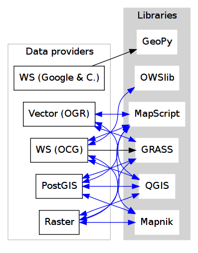
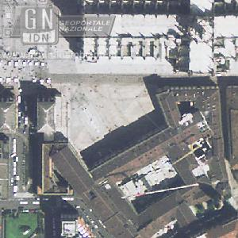
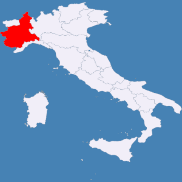
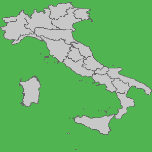

Developing Geospatial software with Python, Part 2
Alessandro Pasotti (apasotti@gmail.com), Paolo Corti (pcorti@gmail.com)
Building blocks: overview
Classification:
- architecture: pure python / binary wrappers, pythonicity
- application interaction: GUI / headless
- input/output formats
- performances and scalability (mostly unexplored)
- documentation, maturity, support, community
Building blocks: WebServices
Only a selection from an huge set:
- OWS (OGC Web Services)
- GeoNames
- Google Maps
- Yahoo Maps
Building blocks: OGC Web Services
Libs
- OWSlib (client)
- Mapnik (server)
- Mapscript (both)
- QGIS (both)
Open Geospatial Consortium defines the following standards for geospatial web services (OWS):
- WMS (Web Map Service)
- WFS (Web Feature Service)
- WCS (Web Coverage Service)
- CSW (Catalogue Service for Web)
- WPS (Web Processing Service)
- many others...
KVP/XML requests
OGC Web Services: WMS
Web Map Service (WMS) is a standard protocol for serving georeferenced map images over the Internet that are generated by a map server using data (vector and cover) from a GIS database
OGC Web Services: WMS operations
- GetCapabilities - returns parameters about the WMS and the available layers (*)
- GetMap - with parameters provided (srs, format, width, eight, bbox, layers...) returns a map image (*)
- GetFeatureInfo - with parameters provided returns feature informations (**)
- DescribeLayer
- GetLegendGraphic
(*) basic WMS (**) queryable WMS
OGC Web Services: WMS GetMap operation
main parameters: layers, styles, srs, bbox, width, height, format
sample GetMap operation (output is an image):
OGC Web Services: WFS
Web Feature Service (WFS) provides a standard interface allowing requests for geographical features across the web using platform-independent calls
The WFS specification defines interfaces for describing data manipulation operations of geographic features. Data manipulation operations include the ability to:
- Get or Query features based on spatial and non-spatial constraints (*)
- Create a new feature instance (WFS-T)
- Delete a feature instance (WFS-T)
- Update a feature instance (WFS-T)
OGC Web Services: WFS operations
- GetCapabilities (1)
- DescribeFeatureType (1)
- GetFeature (1)
- GetGmlObject (2)
- Transaction (3)
- LockFeature (3)
- basic WFS - read only
- XLink WFS
- transaction WFS (WFS-T)
OGC Web Services: WFS GetFeature operation
main parameters: typeName, maxfeatures, query...
sample GetFeature operation (output is GML)
http://myserver/geoserver/wfs?request=GetFeature&version=1.0.0&typeName=layer1&maxfeatures=1
OGC Web Services: WCS
Web Coverage Service Interface Standard (WCS) provides an interface allowing requests for geographical coverages across the web using platform-independent calls
Operations:
- GetCapabilities
- DescribeCoverage
- GetCoverage
OGC Web Services: WCS GetCoverage operation
main parameters: coverage, crs, bbox, time, width, height, resx, resy, format
GetCoverage operation (output is a coverage):
Note: at least one time or bbox parameter is needed
OGC Web Services: CSW
Catalogue Service
- defines common interfaces to discover, browse, query and manage metadata about data, services, and other potential resources
- defines a query language (similar to the SQL "Where Clause") to be supported by all OGC Catalogue Interfaces in order to support search interoperability
- common queryable elements - request (subject, title, abstract, anytext (1), format, identifier, modified, type, boundingbox, CRS...)
- core returnable properties -response (title, creator, subject, description, publisher, contributor, date, type...)
OGC Web Services: CSW operations
Operations:
- GetCapabilities
- DescribeRecord
- GetDomain (*)
- GetRecords
- GetRecordById
- Transaction (*)
- Harvest
(*) optional implementations
OGC Web Services: CSW GetRecords operation
main parameters: outputFormat (XML, text, html), maxRecords, SortBy, Constraint
GetRecords operation (output is XML):
http://www.someserver.com/csw/csw.cgi?request=GetRecords&version=2.0.2&outputFormat=application/xml&outputSchema=http://www.opengis.net/cat/cs w/2.0.2&namespace=csw:http://www.opengis.org/cat/csw&ResponseHandler="mailto:pvretano@cubewerx.com"&typeName=csw:Record&elementSetName=brief&c onstraintlanguage=CQLTEXT&constraint="csw:AnyText Like '%pollution%'"
OGC Web Services: WPS
Web Processing Server provides rules for standardizing how inputs and outputs (requests and responses) for geospatial processing services
Libs
- pyWPS
Building blocks - Web Services: GeoNames
- a geographical database that covers all countries and contains over eight million placenames
- license: Creative Commons Attribution 3.0
- both a web application and a big set of web services
GeoNames: Web Services
GeoNames
- License: CC
- REST, XML and JSON WSs
- Premium offer
Most notably:
- geocoding
- reverse geocoding
- place hierarchy
- places from bounding box
- wikipedia search
- postal code search
- elevation
GeoNames: example of API use
Regions of Italy:
http://ws.geonames.org/children?geonameId=3175395
Response:
<geonames style="MEDIUM">
<totalResultsCount>20</totalResultsCount>
<geoname>
<toponymName>Abruzzo</toponymName>
<name>Abruzzo</name>
<lat>42.25</lat>
<lng>13.75</lng>
...
Building blocks - Web Services: Google Maps
google map embedding (javascript API)
- google map webservices
- geocoding (and reverse geocoding)
- directions
- elevations
- places
Google Maps: example of API use
A geocoding request example:
http://maps.googleapis.com/maps/api/geocode/xml?address=123+via+Oberdan+Foligno,+Italy&sensor=true
Response:
<GeocodeResponse>
<status>OK</status>
<result>
<type>street_address</type>
<formatted_address>
Via Guglielmo Oberdan, 123, 06034 Foligno Perugia, Italy
</formatted_address>
...
Building blocks: QGIS
QGIS (Quantum GIS) is a C++ Qt cross-platform GIS desktop application with vector editing capabilities and python scripting support.
- python plugins (lot of)
- standalone python applications (headless or GUI)
- OGC WMS headless server
QGIS: standalone headless
Loading a vector layer
>>> # Application init
>>> from qgis.gui import *
>>> from qgis.core import *
>>> QgsApplication.setPrefixPath("/usr", True)
>>> QgsApplication.initQgis()
>>> vlayer = QgsVectorLayer("regioni.shp", "regioni", "ogr")
>>> vlayer.isValid()
True
>>> # Add layer to registry
>>> QgsMapLayerRegistry.instance().addMapLayer(vlayer)
<qgis.core.QgsVectorLayer object at 0x13be270>
QGIS: standalone (render)
Rendering
>>> # GUI setup
>>> from PyQt4.QtGui import *
>>> from PyQt4.QtCore import *
>>> img = QImage(QSize(800,600), QImage.Format_ARGB32_Premultiplied)
>>> p = QPainter()
>>> p.begin(img)
True
>>> p.setRenderHint(QPainter.Antialiasing)
>>> render = QgsMapRenderer()
>>> lst = [ vlayer.getLayerID() ]
>>> render.setLayerSet(lst)
>>> rect = QgsRectangle(render.fullExtent())
>>> rect.scale(1.1)
>>> render.setExtent(rect)
>>> render.setOutputSize(img.size(), img.logicalDpiX())
>>> render.render(p)
>>> p.end()
True
>>> img.save("render.png","png")
True
QGIS: result

QGIS: standalone GUI
Requires
- pyQt4
- QtDesigner (recommended)
- GUI programming skills

QGIS standalone GUI less is more
Minimal example: shapefile viewer
>>> from PyQt4 import QtGui, QtCore
>>> import sys, os
>>> from qgis import core, gui
>>> # QGIS application init
>>> core.QgsApplication.setPrefixPath('/usr', True)
>>> core.QgsApplication.initQgis()
>>> app = QtGui.QApplication(sys.argv)
>>> # Layer loading and canvas init
>>> l = core.QgsVectorLayer(sys.argv[1], os.path.basename(sys.argv[1]), 'ogr')
>>> l.isValid()
True
>>> canvas = gui.QgsMapCanvas()
>>> canvas.resize(800,600)
>>> core.QgsMapLayerRegistry.instance().addMapLayer(l)
>>> canvas.setExtent(l.extent())
>>> cl = gui.QgsMapCanvasLayer(l)
>>> canvas.setLayerSet([ cl ])
>>> canvas.show()
>>> retval = app.exec_()
>>> core.QgsApplication.exitQgis()
>>> sys.exit(retval)
QGIS: plugins
Powerful extensions to QGIS! Download from http://pyqgis.org
- start from a barebone plugin or use the Plugin builder
- create a GUI with QtDesigner
- connect GUI events with QGIS code
- control QGIS application from python code
- see: QGIS APIs http://qgis.org/api/
Geopy
Geopy (http://code.google.com/p/geopy/) provides an interface to external geocoding and reverse geocoding webservices
Providers:
- Google Maps
- Yahoo! Maps
- Windows Local Live (Virtual Earth)
- geocoder.us
- GeoNames
- MediaWiki pages (with the GIS extension)
- Semantic MediaWiki pages
Geopy: installation and usage
$ sudo easy_install geopy
>>> from geopy import geocoders
>>> g = geocoders.Google()
>>> g.geocode('via anelli 12, milano')
(u'Via Luigi Anelli, 12, 20122 Milan, Italy', (45.452325000000002, 9.1927447999999998))
>>> g.geocode('otherworld')
GQueryError: No corresponding geographic location could be found for the specified location, possibly because the address is relatively new, or because it may be incorrect.
Geopy: risultati multipli
>>> g.geocode('xyz')
ValueError: Didn't find exactly one placemark! (Found 6.)
>>> for l in g.geocode('xyz', exactly_one=False):
... l
...
(u'S Xyz Rd, Pickford, MI 49774, USA', (46.118099999999998, -84.321274599999995))
(u'XYZ Liquor, 295 US Highway 17 S, Bartow, FL 33830, USA', (27.895257999999998, -81.828790999999995))
(u'XYZ Restaurant, 80 Seawall Rd, Southwest Harbor, ME 04679-4024, USA', (44.269646999999999, -68.322371000000004))
(u'XYZ Trading, 7018 Harwin Dr, Houston, TX 77036-2114, USA', (29.718654999999998, -95.507260000000002))
(u'Xyz Exterminating, PO Box 1643, Grand Island, NE 68802-1643, USA', (40.93, -98.340000000000003))
(u'\uff38\uff39\uff3a\u6c34\u6ca2', (39.156194399999997, 141.1596222))
Geopy: reverse
svn version required for reverse functions
$ svn checkout http://geopy.googlecode.com/svn/branches/reverse-geocode geopy
$ cd geopy/
$ sudo python setup.py install
>>> (loc, point) = g.geocode('via anelli 1, milano')
>>> point
(45.453902599999999, 9.1930519000000004)
>>> g.reverse(point)
(u'Via Luigi Anelli, 1, 20122 Milan, Italy',
(45.453902599999999, 9.1930519000000004))
OWSLib
OWSLib Makes WxS Suck Less. A library to consume OGC(TM) web services.
Depends on
- lxml
| Standard | Version(s) |
|---|---|
| OGC WMS | 1.1.1 |
| OGC WFS | 1.0.0, 1.1.0 |
| OGC WCS | 1.0.0, 1.1.0 |
| OGC WMC | 1.1.0 |
| OGC SOS | 1.0.0 (not complete) |
| OGC CSW | 2.0.2 |
| OGC Filter | 1.1.0 |
| OGC OWS Common | 1.0.0, 1.1.0, 2.0 |
| NASA DIF | 9.7 |
| FGDC CSDGM | 1998 |
| ISO 19139 | 2003/2007 |
| Dublin Core | 1.1 |
OWSLib: installation and usage
$ sudo easy_install OWSLib
>>> from owslib.wms import WebMapService
>>> wms = WebMapService('http://wms.pcn.minambiente.it/cgi-bin/mapserv.exe?map=/ms_ogc/service/ortofoto_colore_06_f32.map', version='1.1.1')
>>> list(wms.contents)
['ortofoto_colore_06', 'watermark']
>>> wms.contents['ortofoto_colore_06']
>>> wms['ortofoto_colore_06'].boundingBox
(298457.0, 3914540.0, 1327000.0, 5239710.0, 'EPSG:32632')
>>> wms['ortofoto_colore_06'].boundingBoxWGS84
(6.3349900000000003,
35.034300000000002,
19.840800000000002,
47.310899999999997)
OWSLib: usage
>>> wms.getOperationByName('GetMap').formatOptions
['image/png',
'image/gif',
'image/png; mode=24bit',
'image/jpeg',
'image/wbmp',
'image/tiff',
'image/svg+xml']
>>> img = wms.getmap( layers= ['ortofoto_colore_06'], bbox = (514832, 5034338, 515032, 5034548), srs = 'EPSG:32632', size=(300, 300), format = 'image/jpeg')
>>> img.geturl()
'http://wms.pcn.minambiente.it/cgi-bin/mapserv.exe?map= ...'
>>> outfile = open('duomo.jpg', 'wb')
>>> outfile.write(img.read())
>>> outfile.close()
OWSLib: result
Mapnik
Mapnik is a C++ Toolkit for developing mapping applications. Above all Mapnik is about making beautiful maps. Suitable for both server and desktop.
Pros & Cons
- Itegrated WMS server
- Lack of documentation
- XML configuration for styles
- No SLD support
import mapnik
m = mapnik.Map(300,300,"+proj=latlong +datum=WGS84")
m.background = mapnik.Color('steelblue')
s = mapnik.Style()
r = mapnik.Rule()
r.symbols.append(mapnik.PolygonSymbolizer(mapnik.Color('#f2eff9')))
r.symbols.append(mapnik.LineSymbolizer(mapnik.Color('rgb(50%,50%,50%)'),0.1))
s.rules.append(r)
# Make PIEDMONT red
r = mapnik.Rule()
r.filter = mapnik.Filter("[regione] = 'PIEMONTE'")
r.symbols.append(mapnik.PolygonSymbolizer(mapnik.Color('#ff0000')))
s.rules.append(r)
m.append_style('My Style',s)
lyr = mapnik.Layer('world',"+proj=latlong +datum=WGS84")
lyr.datasource = mapnik.Shapefile(file = '../data/regioni')
lyr.styles.append('My Style')
m.layers.append(lyr)
m.zoom_to_box(lyr.envelope())
mapnik.render_to_file(m, '../images/regioni_mapnik.png', 'png256')
Mapnik: layer inspection
Can be useful for dynamic rules building
# .. continues from previous example
>>> feature = lyr.datasource.all_features()[0]
>>> for p in feature.attributes:
... p
('boundingbo', u'')
('cod_reg', 1)
('cod_rip1', 11)
('cod_rip2', 21)
('gid', 1)
('objectid', 1)
('regione', u'PIEMONTE')
('shape_area', 25388746287.599998)
('shape_len', 1334295.0100499999)
Mapnik: XML mapfile
<?xml version="1.0" encoding="utf-8"?>
<!DOCTYPE Map>
<Map bgcolor="steelblue" srs="+proj=latlong +datum=WGS84">
<Style name="My Style">
<Rule>
<PolygonSymbolizer>
<CssParameter name="fill">#f2eff9</CssParameter>
</PolygonSymbolizer>
<LineSymbolizer>
<CssParameter name="stroke">rgb(50%,50%,50%)</CssParameter>
<CssParameter name="stroke-width">0.1</CssParameter>
</LineSymbolizer>
</Rule>
<Rule>
<Filter>[regione] = 'PIEMONTE'</Filter>
<PolygonSymbolizer>
<CssParameter name="fill">#ff0000</CssParameter>
</PolygonSymbolizer>
</Rule>
</Style>
<Layer name="regioni" srs="+proj=latlong +datum=WGS84">
<StyleName>My Style</StyleName>
<Datasource>
<Parameter name="type">shape</Parameter>
<Parameter name="file">../data/regioni</Parameter>
</Datasource>
</Layer>
</Map>
Mapnik: result
Mapscript
Python bindings to UMN MapServer (C)
- complete bindings: full access to MapServer power
- not very pythonic
- http://mapserver.org/mapscript/
Installation:
$ sudo apt-get install python-mapscript
Mapscript: usage
Hate
I hate mapfiles ;)
import mapscript
map = mapscript.mapObj( )
map.name = 'Test Map'
map.setSize(300, 300)
map.setExtent(-180.0,-90.0,180.0,90.0)
map.imagecolor.setRGB(80, 180, 80)
map.units = mapscript.MS_DD
layer = mapscript.layerObj(map)
layer.name = "regioni"
layer.type = mapscript.MS_LAYER_POLYGON
layer.status = mapscript.MS_DEFAULT
layer.data = 'data/regioni'
lass1 = mapscript.classObj(layer)
class1.name = "Regioni"
style = mapscript.styleObj(class1)
style.outlinecolor.setRGB(100, 100, 100)
style.color.setRGB(200, 200, 200)
extent = layer.getExtent()
map.setExtent(extent.minx, extent.miny, extent.maxx, extent.maxy)
mapimage = map.draw()
mapimage.save('images/mapscript_map.png')
MapScript: result
pyWPS
GRASS
Powerful raster GIS analysis (mixed: C, Python etc.)
- GRASS Python scripting library
- GRASS ctypes bindings (low level GRASS library calls)

- lot of environment requirements
- difficult to configure for an headless use
GRASS: scripting
Environment setup
import sys, os
GISBASE = '/usr/lib/grass64/'
wd = os.path.dirname(os.path.realpath(__file__))
# Setup environment
sys.path.append( GISBASE + 'etc/python/' )
os.environ['GISBASE'] = GISBASE
os.environ['GISRC'] = '/home/' + os.environ['USER'] + '/.grassrc6'
os.environ['PATH'] = os.environ['PATH'] + ':' + GISBASE + 'scripts/'
os.environ['PATH'] = os.environ['PATH'] + ':' + GISBASE + 'bin/'
os.environ['LD_LIBRARY_PATH'] = GISBASE + 'lib/'
os.environ['GIS_LOCK'] = "%s" % os.getpid()
import grass.script as grass
GRASS: scripting (2)
Running commands
print grass.run_command('g.version', flags = 'r')
print grass.run_command('v.in.ogr', flags = 'l', dsn = wd + '/../data/regioni.shp')
print grass.run_command('v.in.ogr', flags='c', layer = 'regioni', location = 'regioni', output = 'regioni', dsn = wd + '/../data/regioni.shp')
# Set region resolution
print grass.run_command('g.mapset', mapset='PERMANENT', location='regioni')
print grass.run_command('g.region', res = 0.02)
print grass.run_command('g.list', type = 'vect')
print grass.run_command('v.to.rast', input='regioni', output='regioni', column='cod_reg')
print grass.run_command('r.out.png', input='regioni', output= wd + '/../images/regioni_grass.png')
GRASS: result
GRASS: ctypes
$ export LD_LIBRARY_PATH='/usr/lib/grass64/lib/'
Ctypes reads LD_LIBRARY_PATH at python interpreter startup: non way to set this from the script.
from ctypes import *
cgrass = CDLL("libgrass_gis.so")
cgrass.G__gisinit()
Links
- Mapnik